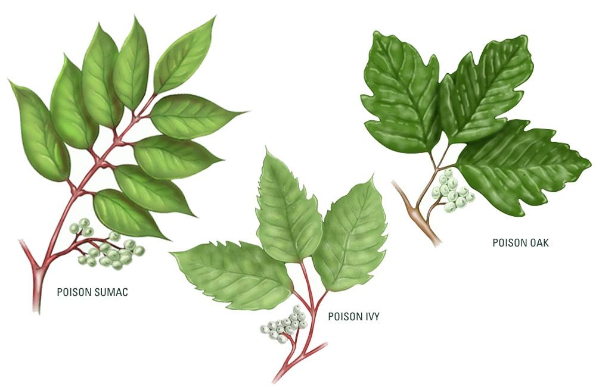

For pets, we keep them safe at home by removing dangers, making sure they have good food and water, and taking them to the vet. For wild animals, we must respect their space. Never get too close to a wild animal, especially if it's eating or has babies. Keeping your distance (at least 50 feet) helps them stay wild and prevents them from getting comfortable around people, which is dangerous for everyone. If an animal seems scared or threatened, be calm and back away slowly.
While all plants serve a vital role in Earth's ecosystems, some possess potent toxins as a natural defense mechanism against animals and insects. These poisonous plants can cause a wide range of harm to humans and pets, from simple skin irritation to severe organ failure or death, depending on the plant and amount ingested. The toxins vary; some cause an immediate reaction, while others have delayed, but fatal, effects. Common contact irritants in North America include poison ivy, poison oak, and poison sumac, all of which contain the oil urushiol that causes an allergic rash.
